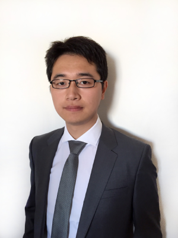

YU Shengjie
Master d'expert ingénieur informatique
Ingénieur en développement logiciel
28 ans, Chinois
room
6 allée de l’Oseraie,94260 Fresnes
France
phone
07 80 01 42 89
mail
shengjie.yu89@gmail.com
- Français: starstarstarstarstar_border
- Anglais: starstarstarstarstar_border
- Chinois: starstarstarstarstar
- Vélo
- Natation
- Cuisine
- Méditation
Compétences
- PHP 7
- Symfony 3/4
- MariaDB
- ElasticSearch
- Algolia
- PHPUnit
- React
- Sass
- Webpack
- Node / NPM
Formations
2011 - 2013
BAC+5
SUPINFO (ECOLE SUPÉRIEURE D’INFORMATIQUE), TOURS FRANCE
Diplôme de Master d’expert (Bac+5) en informatique et en système d’informations
2007 - 2011
BAC+3
SUPINFO (ECOLE SUPÉRIEURE D’INFORMATIQUE), TIANJIN, CHINE
Diplôme d’International d’ingénierie informatique
2007 - 2011
Licence
HEBEI UNIVERSITY OF TECHNOLOGY, TIANJIN, CHINE
Diplôme de licence en informatique
Expériences Professionnelle
10/2015 -
CDI
AGRICONOMIE SAS, IVRY-SUR-SEINE, FRANCE
Chef de projet technique
PROJECT AGRICONOMIE.COM : marketplace pour agriculteurs français
* Conception / réalisation besoin métier.
Techniques : Debian, Nginx, MariaDB, PHP7, Symfony2, React, Elasticsearch
* Conception / réalisation besoin métier.
Techniques : Debian, Nginx, MariaDB, PHP7, Symfony2, React, Elasticsearch
04/2014 - 09/2015
CDI
ILONA SERVICES, NEUILLY-SUR-SEINE, FRANCE
Responsable de projet informatique
PROJECT DOMELIANE: plateforme multi-utilisateur pour gestion des donnée patient
* Conception / réalisation l’application web fullstack
Techniques: Symfony2, MySQL, jQuery, LESS, SemanticUI, Boostrap3, HTML5 Canvas
* Conception / réalisation l’application web fullstack
Techniques: Symfony2, MySQL, jQuery, LESS, SemanticUI, Boostrap3, HTML5 Canvas
PROJECT ANGELQR: application mobile pour gestion des donnée santé personnel
* L'application mobile (Cordova) / API REST avec Symfony2 FOSRestBundle / Back-office (AngularJS)
Techniques: AngularJS, Cordova, IonicFramework, Symfony2, FOSRestBundle, MySQL, NodeJS, PayPal
* L'application mobile (Cordova) / API REST avec Symfony2 FOSRestBundle / Back-office (AngularJS)
Techniques: AngularJS, Cordova, IonicFramework, Symfony2, FOSRestBundle, MySQL, NodeJS, PayPal
02/2013 - 02/2014
CDI
EASIMEX, ORSAY, FRANCE
Ingénieur conception et développement logiciel
Ingénieur conception et développement logiciel
PROJET MARKETLINKERS: site réseaux sociaux pour SME/SMI
* Conception du site
Techniques: WCF REST, EntityFramework, DOJO
* Conception du site
Techniques: WCF REST, EntityFramework, DOJO
PROJET EASIBID: application entreprise web pour calculer/simuler des frais de frêt
* Conception / Réalisation du application
Techniques: WCF REST, Entity Framework, DOJO
* Conception / Réalisation du application
Techniques: WCF REST, Entity Framework, DOJO
PROJET EASIQUOTE: logiciel de bureau pour calculer/simuler des frais de frêt
* Architecture / Conception / Réalisation
* Technique: WPF, EntityFramework, PDF, OpenStreetMap intégration.
* Architecture / Conception / Réalisation
* Technique: WPF, EntityFramework, PDF, OpenStreetMap intégration.
08/2012 - 01/2013
STAGE
CAPITALDATA, PARIS, FRANCE
Stage développeur
Stage développeur
PROJET EMAIL RETARGETING
* Conception/ réalisation / validation de contenu mail.
* Réalisation suivi de mail / site désabonne
Techniques: HTML, CSS, CGI Pixel ( C++ socket ), PHP CodeIgniter, Crontab
* Conception/ réalisation / validation de contenu mail.
* Réalisation suivi de mail / site désabonne
Techniques: HTML, CSS, CGI Pixel ( C++ socket ), PHP CodeIgniter, Crontab
03/2011 - 07/2011
STAGE
SPLIO INTERNATIONAL, BEIJING, CHINA
Stage développeur
Stage développeur
PROJECT RÉSEAU SOCIAUX: Réseau sociaux interne
jQuery, PHP, Apache2, MySQL
jQuery, PHP, Apache2, MySQL